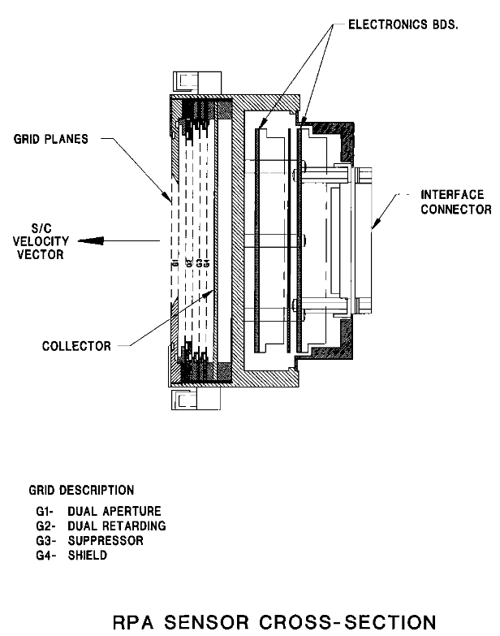
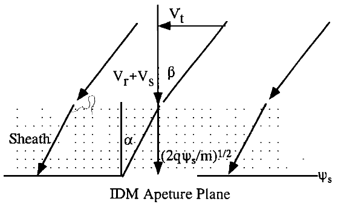
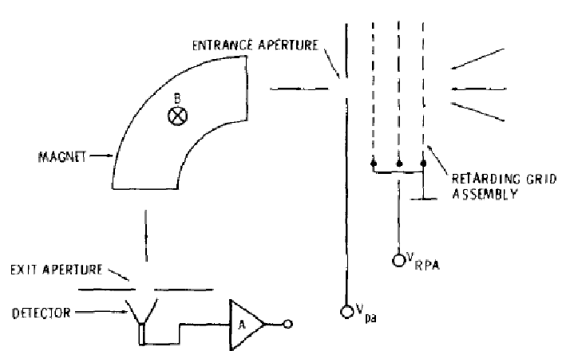

Code
from plasmapy.particles import Particle
import astropy.units as uLow Energy Plasma Instruments
References:
In the ionosphere, mount along ram velocity, measure species densities (in like atomic mass groups)
- Ram speed (7.5km/s) is high or supersonic relative to ion thermal speed or motion
- Spacecraft (sc) charging is negative and small relative to motional energy
- I-V curve has steps at \(qV_{ret} = \frac{1}{2}m(V_{sr}+V_r)^2 – q \phi_s\) ; \(\phi_s\) = sensor potential (w/r/t to plasma), \(V_{s_r}\) = sc ram speed, \(V_r\) = ion speed
Homework Q#1
- Show that the thermal width of the steps is \(m V_{sr} V_{th}\), where \(V_{th}\) is the ion species thermal speed.
- Show that for sensor potential of –0.8V, the step functions are at ~1.1V for H+ and ~5.5V for O+.

thermal width = \(\frac{1}{2} m (V_{th} + V_{s_r})^2 - \frac{1}{2} m (V_{th} - V_{s_r})^2 = m V_{s_r} V_{th}\)
step function for low temperature ions, taking \(V_{r}=0\)
\[V_{ret} = \frac{1}{2} \frac{m}{q}V_{s_r}^2 – \phi_s\]
def calc_step_potential(phi, v_sr, particle: Particle):
result = particle.mass * v_sr ** 2 / (2 * particle.charge) - phi
return result.to(u.V)
phi = -0.8 * u.V
v_sr = 7.5 * u.km / u.s
proton = Particle('proton')
o_plus = Particle('O+')
print(f'Proton step potential: {calc_step_potential(phi, v_sr, proton)}')
print(f'O+ step potential: {calc_step_potential(phi, v_sr, o_plus)}')Proton step potential: 1.0936161382302447 V
O+ step potential: 5.463469940275583 VIn the ionosphere, mounted along ram velocity, measure species velocity
- G2 (positive) retards e.g. the lower energy H+, but allows the higher energy O+ through
- Collimated beam comes through and falls asymmetrically (based on direction) on collectors
- G6 (negative) suppresses electrons
- G3-5 are grounded to remove distortions
Homework Q#2: Determine transverse velocity \(V_t\) as function of ram speed, W, D.

The ram velocity measued at the RPA can be related to the ion velocity at infinity \(V_r\) by
\[ \frac{1}{2} m V_{ram} = \frac{1}{2} m (V_{r} + V_s)^2 - q \phi_s\]
The ratio of two currents measured by the RPA is
\[ J_1 / J_2 = \frac{A_1}{A_2} = \frac{W-2 D \tan \alpha}{W+2 D \tan \alpha}\]
where \(A_1\) and \(A_2\) are the areas of the two collectors. The angle \(\alpha\) is the angle between the ion velocity and the normal to the collector surface. The ion velocity can be expressed as
\[ V_t = V_{ram} \tan \alpha \]
The log of the ratio of the fluxes, which are actually measured
\[ \log R = J_1 / J_2\]
Combining these equations gives
\[ V_t=\left[\left(V_r+V_s\right)^2-2 q \phi_s / m\right]^{\frac{1}{2}} \frac{W}{2 D}\left( 1-\log R \right) /\left(1+ \log R \right) \]
For low energy (less than a few keV) particles (left):
- RPA provides velocity, temperature. Post-acceleration, Vpa, behind it allows refined measurement of m/q
- Homework Q#3 Show that in LIMS: \(m/q=(B r_c)2/(2V_{pa})\), where B is magnetic field, rc particle magnetic radius
For high energy particles (right) the RPA is not used (they are hard to control with potentials):
- Broom magnet clears electrons
- High field bends the high energy ions
- Ions that were not bent are assumed to be neutrals (ENAs)

The energy of accelerated particle is: \[ \frac{1}{2} m v^2=q V_{p a} \]
Particles that are able to reach the detector must satisify: \[ m v^2 r_c=B q v \]
Combining Equations we get: \[ \begin{aligned} & v=\left(\frac{2 q}{m} V_{p a}\right)^{\frac{1}{2}} \\ \Rightarrow & m / q=\left(B r_c\right)^2 / 2 v_{p a} \end{aligned} \]
Electrostatic deflection “analyzes” distribution selecting particles with matching centrifugal and electrostatic forces
- Analyser constant, \(K=R/\Delta\), where \(\Delta=R_2-R_1\); \(R=(R_2+R_1)/2\). Outer shell is at 0 Volts, inner shell at potential V.
- Electrostatic deflection at the entrance aperture can measure incoming ions from different directions if spacecraft non-spinning
- Homework Q#4 Show that the energy W of the particles of charge q incident on the MCP is \(W=-K q V /2\)
Particles that are able to reach the detector must satisify:
\[ m v^2 R=q E \]
where \(E\) is the electric field between \(R_2\) and \(R_1\), \(E \approx \frac{-V}{\Delta}\), so
\[ \begin{aligned} & m v^2=\frac{-R}{\Delta} q V = -K q V \\ \Rightarrow & W=\frac{1}{2} m v^2=-\frac{1}{2} K q V \end{aligned} \]
Electrostatic deflection provides energy per charge: E/Q. Time of flight, t, provides the energy per mass E/M
- Post-acceleration potential \(U_{ACC}\) is sufficient for optimal McP operation and timing electrons at foil. Measure flux at \(E/Q+ U_{ACC}\)
- Electrons generated at carbon foil. Carbon foil results in passage of an energy fraction \(\alpha\)
- Homework Q#5. Show \(M/Q=2a(E/Q + U_{ACC})/(d/t)^2\), where: Q=ion charge in units of elemental charge, e.
The velocity of ions after passing through the foil is
\[ v=d / t \]
Due to partial energy transfer after passing the foil
\[ \frac{1}{2} M v^2=\alpha\left(E + Q U_{ACC}\right) \]
Combining Equations we get:
\[ M / Q=2 \alpha\left(E / Q+U_{ACC}\right) /(d / t)^2 \]